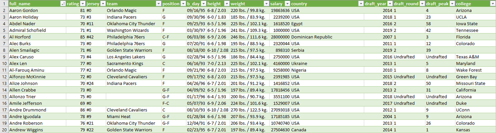
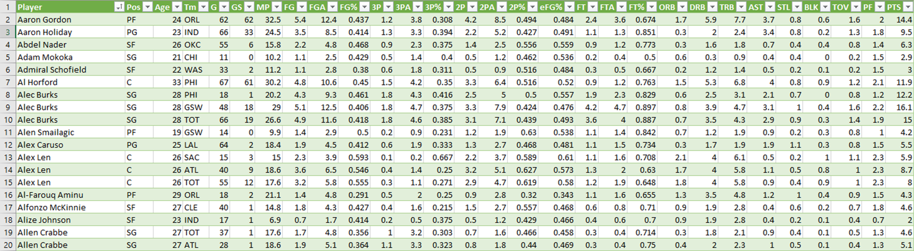

Finding the next NBA unicorn
It’s a new era for the National Basketball Association: The time of the unicorn
As an avid NBA fan and basketball player, I naturally chose NBA as the topic for one of my projects. Magnificent and rare, just like the mythical horned creatures, the NBA has coined the term “Unicorn” to refer to players who possess uncommon physical qualities and the talent to be above the rest.
What exactly is an NBA Unicorn?
Unicorns have roamed the NBA for years, with their unique blend of size, skills and athleticism. They are all rounders, with the build to play power forward or center and also the technical skills to play guard.
Here’s how one would describe at NBA Unicorn:
• Normally bigger than 6’11 (2.1m)
• Excellent three point shooting accuracy
• Has lateral agility
• Exceptional ball handling skills
I started out by collecting data from two sources – both of which are from Kaggle.
The first source is NBA 2K20 PS4 Game. I chose to utilise this dataset because it contains data of the players’ height, weight and salaries etc amongst other attributes – which can largely be used to quantify a player’s physical attributes.
Screenshot of the datasetThe second source is NBA 2019-2020 Statistics. This was an obvious choice because it contains all kinds of basic and advanced stats, from points to rebounds and more – all of which can be used to deduce a player’s technical skills.
Screenshot of the datasetHere is what I had to work with:
Both datasets provided all the information I require. However, there are some blank data as well as mismatched variables. Some of the European players’ names were spelt with alien/foreign characters. I did a Google search to fill in the missing data manually as well as converted all the players’ names to a legible format (e.g. “Luka DonÄić” has been corrected to “Luka Doncic”).
Once I’ve gathered and standardised all the data, I designed the Entity-Relationship Diagram (ERD) and Relational Schema. This is the initial step for database design.
To ensure data integrity, I then created entities (tables) required to store the data collected, based on three most common levels of normalization. Normalization, by definition, is the process of organising data in order to reduce redundancy by dividing a database into two or more tables and then defining table relationships. The objective of this operation is to isolate data so that additions, deletions, and modifications occurring in each field can be made inside one table and then propagated throughout the rest of the database using these defined relationships. The first three normalization forms (NFs) I focused in this project are:
• 1NF: Eliminate repeating groups
• 2NF: Eliminate redundant data
• 3NF: Eliminate columns not dependent on key
- Player records with attributes of Player_ID, Player_Name, Position, Age, Height, Weight, Salary and Country
- Identifying relationships (e.g. A player may play for many teams but a team can only take 1 player)
- Individual players’ statistics
After firming up the database schema, data preparation was done by cleaning, harmonising, transforming data type and exporting each of the entities to .CSV file. I then created an NBA database using SQL Server Management Studio (SSMS) and imported data into the database through a flat file. With that, it is ready to retrieve data for analysis by answering the questions using SQL:
What is the average height in the NBA League?
What is the average points per game from the NBA players?
What is the average three point percentage throughout the league?
Who are the top 5 players who are over 6’11 and has the highest points per game (Best scorer)?
From PlayerStats PS
JOIN Player P ON PS.Player_Name = P.Player_Name AND P.Player_Height_CM >= 2.1
WHERE PTS >= 19
ORDER BY PPG DESC;
Who are the top 5 Big men who have a high 3-point percentage (Best shooter)?
From PlayerStats PS
JOIN Player P ON PS.Player_Name =P.Player_Name AND P.Player_Height_CM >= 2.1
WHERE _3P >= 1.5
ORDER BY ThreePtPercentage DESC;